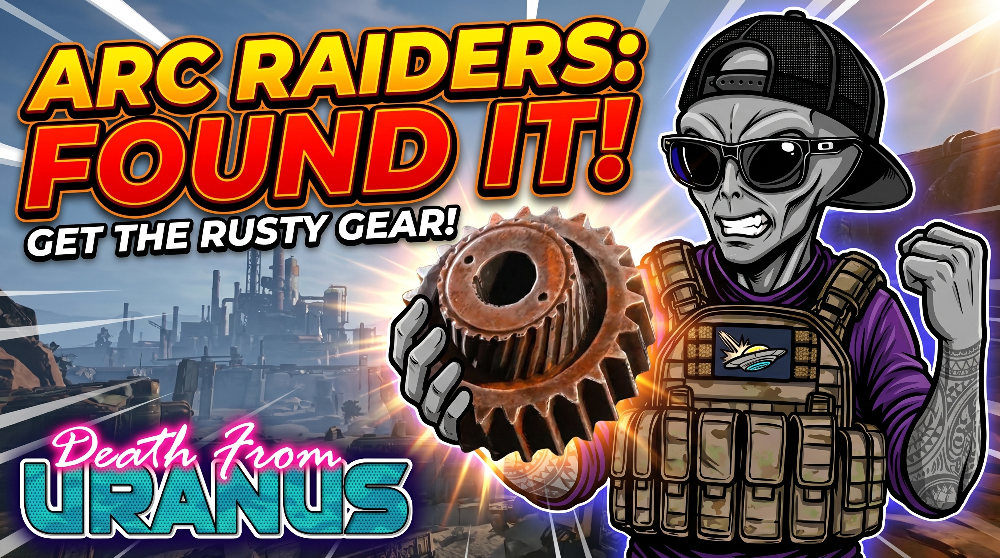

The Ultimate Guide to Farming Rusted Gears in ARC Raiders

If you've spent any real time in ARC Raiders, you already know the pain: you need rusted gears for expeditions and crafting projects, and they always seem to be the one resource holding you back. For a long time, the go-to method was crouching next to every car on the map and praying — slow, inconsistent, and honestly kind of soul-crushing.
The good news? Farming rusted gears is now genuinely easy once you know where to go. Below are the most reliable spots to guarantee at least one rusted gear per run, with a real shot at two.
1. The Best Location: Stella Montis
Stella Montis is hands-down the easiest and most reliable place to farm rusted gears right now. If you only learn one route from this guide, make it this one.
- Where to go: Head under the medical bay and make your way into the logistics admin area.
- What to look for: Breachable green containers. Once you start spotting them, you'll see them everywhere in this zone.
- The strategy: Breach every green container on the upper floor — this is guaranteed to drop at least one rusted gear. Once you've cleared the top level, head downstairs. There are a couple more green containers down there, and the lower level gives you a real chance at pulling a second gear on the same run.
The whole loop is fast, the drop is guaranteed, and you can extract immediately after. It's about as efficient as farming gets in this game.
2. The New Area: Control Axis Zone
If you've been exploring the newer map areas, the Control Axis Zone runs on basically the same logic as Stella Montis.
- Where to look: Same breachable green containers as before. You'll find a cluster of two or three in one spot, plus another one tucked into the staircase.
- The strategy: If you're already passing through, it's absolutely worth taking the few extra seconds to breach them. You can pull up to two rusted gears per run from this zone alone, making it a strong secondary farming spot — or a solid backup if you want a change of scenery from Stella Montis.
Where NOT to Waste Your Time
It's tempting to assume the green container trick works everywhere. It doesn't. Spaceport, for example, has a surprising number of these containers scattered around the map, and at a glance it looks like the perfect farm. But testing has shown the Spaceport containers don't reliably drop rusted gears — you'll burn a lot of time for very little payoff.
Skip Spaceport for gear farming and stick to Stella Montis. Your loot pool will thank you.
The Bottom Line
Stop crawling under cars. A couple of quick Stella Montis runs through the logistics admin area, a few breached green containers, and you'll have all the rusted gears you need for whatever you're building next. If you want to mix things up, Control Axis Zone is right there with the same payout.
Happy raiding.